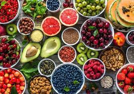
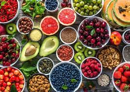
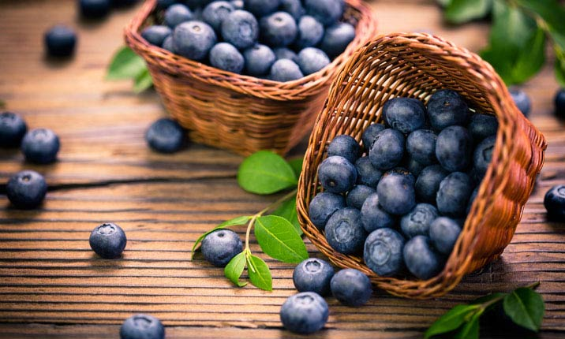

Super Food Picture |
Super Foods |
|---|---|
 |
Acai berries are extremely high in anthocyanins – a type of antioxidant that supports balanced cholesterol levels. |
 |
Apples contain a type of soluble fibre, known as pectin, that has been linked to lower levels of bad cholesterol. |
 |
Avocados are loaded with heart-healthy monounsaturated fatty acids which, when eaten in place of saturated fat, may help lower your blood cholesterol. |
 |
Pomegranate contains some iron, a mineral needed to make red blood cells in our body. A deficiency in iron can cause anaemia, resulting in symptoms such as exhaustion, dizziness and weakness. |
 |
Vitamin C is an essential nutrient when it comes to boosting your immune system to ward off disease. Just one cup of kiwi is able to provide you about 273% of your recommended daily intake of vitamin C, strengthening the immune system. |
 |
The antioxidants lutein and zeaxanthin found in papaya filters out harmful blue light rays, playing a protective role in eye health and possibly warding off damage from retinal degeneration. |
|  | Blueberries may aid in improving memory and delaying cognitive problems frequently associated with ageing. Studies on blueberry intake suggest that this is likely due to blueberries’ vast array of antioxidant nutrients that help to protect the nerve cells from oxygen damage |